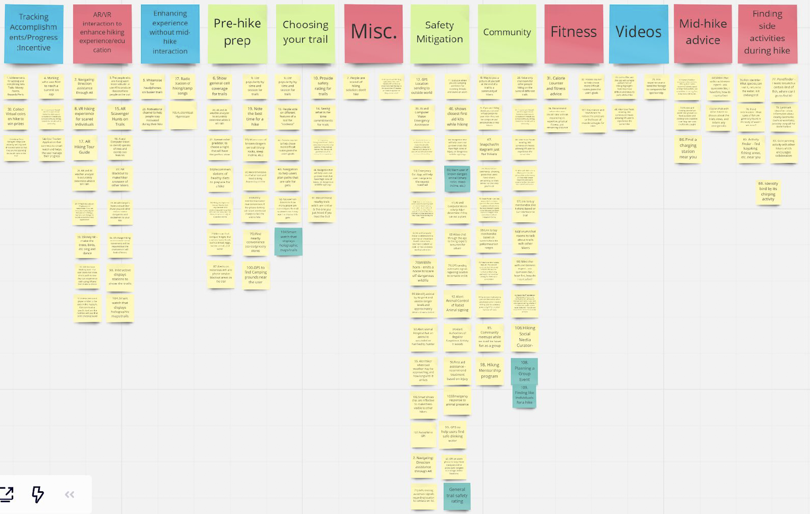

HerdHikes
UI/UX
Hiking is an excellent activity that presents a unique opportunity for its participants to exercise, enjoy nature, socialize, and take a mental break from the chaos of everyday life.
My goal was to create a product that inspires people to hike while simplifying the logistical requirements associated with planning group trips.
| ROLE | YEAR | TECH |
| UI/UX Designer Researcher |
2021 | Illustrator Adobe XD |
No applications are offering services that are created for the purpose of helping hikers choose and schedule hiking trips. The goal is to minimize the users' logistical concerns, allowing them to focus on the hike more than the planning, scheduling, coordinating and communicatiion.
All participants lived in Georgia and are college age individuals (19-27). Different genders, races, and personality types are represented in this group.
| Interview Method | Number |
|---|---|
| Online Survey | 11 |
| In-Person Interviews | 3 |
| In-Person Interviews | 3 |
| Phone Interviews | 2 |
| Online Reseatch | 4 |
● What additional activities do you like to participate in while on a hiking trip? (e.g. climbing, kayaking, biking, camping, etc.)
● How often do you hike throughout the year, and what factors motivate your decisions?
● Approximately how many hiking trips do you schedule and cancel each year? Why?
● What are the factors used to determine which trail you choose? (eg. location, difficulty, trail completion time, views, landmarks, etc.)
● Do you prefer to hike in groups or alone? How do you coordinate hiking trips? What are associated hurdles?
One individual interviewed has a friendly competition with a friend in a similar activity to hiking, so we could see competition being a small factor for some users. Many interviewees did not like using their phones during hikes. A few people liked to track their steps and calories on the trail. Everyone liked hiking with at least a small group of friends, and all individuals interviewed stated that they like to hike because they enjoy being outdoors.


Convenience - users want to find trails that are nearby and easy to access quickly. They want to if the trail has the features and amenities that they want, trail difficulty, and level of preparedness needed so that they can find
an ideal path with little time and effort spent.
Seclusion - Hikers do not mind using technology in preparation of thei hike. However when on the trail; they want to be "in the moment" and "aware of their surroundings" on the trail, often wanting to use technology as little as
possible.
Community - My interviewees strongly prefer bonding with others on hikes and sharing unique outdoor experiences. There may be friendly competition at times, but the technology needs to include a strong social component that encourages
collaboration and is easily accessible for both new and experienced hikers.Encourage groups of individuals to hike.
Safety - Some users were very invested in ensuring that their chosen trail was low-risk and that in case of an emergency they can receive assistance.
There were two 45 minute long ideation sessions that produced 110 ideas. The goal was to keep the design criteria in mind and come up with as many judgement free ideas as possible.

To select the final design concept, I looked at the ideas generated, and analyzed them in terms of whether the concept meets design criteria, market and user needs "best" according to the data. Finally, which
Community was the most importand design criteria, as determined from the data.
After creating the ideas I separated the ideas into main categories. I choose which categories were most relevant to our user and market needs. Green sticky noted indicate the most relevant categories, and the blue sticky notes beneath
highlight the most relevant ideas. I thought that planning a group hiking event and finding people to join you in your hike, satisfied our design requirements and met unsatisfied needs.
Finally, the idea for HikeHerd was born and I began outlining features inspired by findings and began prototyping concepts.
Group Hiking Coordinator
Focus on Community and Convenience : Our interviewees liked the social aspects of hiking, yet sometimes struggled with planning. This website will provide features to the user to help them plan and obtain information regarding their
hike in a centralized location.
Stakeholders : The most relevant stakeholders would be enthusiastic hikers looking to hike with groups of individuals. Primarily this appeals to our John Walker persona, which includes individuals that want to plan hikes with others,
track progress, and belong to an enthusiastic hiking-centered community. This app will likely appeal to enthusiastic hikers of ages 20-45.
Tech Innovation : There are no major social media or event planning and management sites created around Hiking that we are aware of. This is a novel concept that helps bring people together around their interest in hiking.

● Create outing(s) and invite others
● Search for hike
● Browse hiking locations, view trail features, read reviews and view geotagged photos posted by other users.
● Send and receive messages.
● Dashboard - users can view calendar, browse hikes by location, view posts and outings shared by the community.
● Accept, Decline, Remind about potential outings.
● If a user selects “Going”, it will be added to the user’s calendar.
● Each user will have their own profile, displaying photos and preferences.
Profiles can be public or private.
● Users can list favorite locations and obtain information regarding events in those locations, manage contacts, and follow certain users’ blog entries.